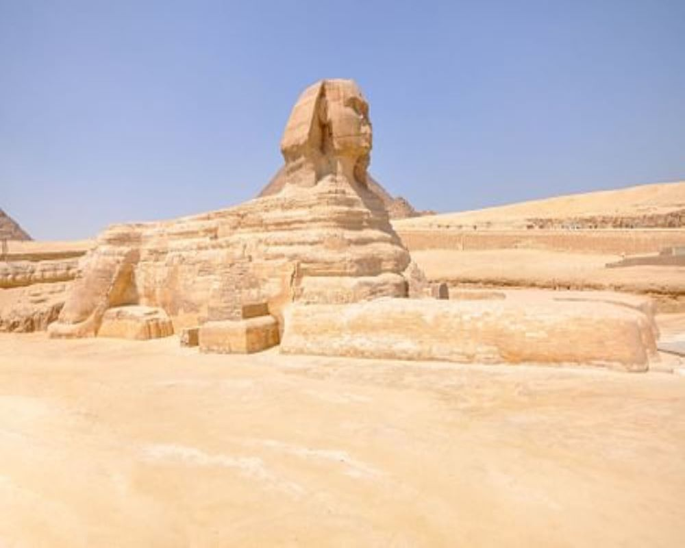

Welcome to Egypt
The history of ancient Egypt spans the period from the early prehistoric settlements of the northern Nile valley to the Roman conquest of Egypt in 30 BC. The pharaonic period, the period in which Egypt was ruled by a pharaoh, is dated from the 32nd century BC, when Upper and Lower Egypt were unified, until the country fell under Macedonian rule in 332 BC.
- Neolithic Age
- Along the Nile in the 12th millennium BC, an Upper Paleolithic grain-grinding culture using the earliest type of sickle blades had replaced the culture of hunting, fishing, and hunter-gatherers using stone tools. Evidence also indicates human habitation and cattle herding in the southwestern corner of Egypt near the Sudan border before the 8th millennium BC.
- Continued desiccation forced the early ancestors of the Egyptians to settle around the Nile more permanently and forced them to adopt a more sedentary lifestyle. However, the period from 9th to the 6th millennium BC has left very little in the way of archaeological evidence.